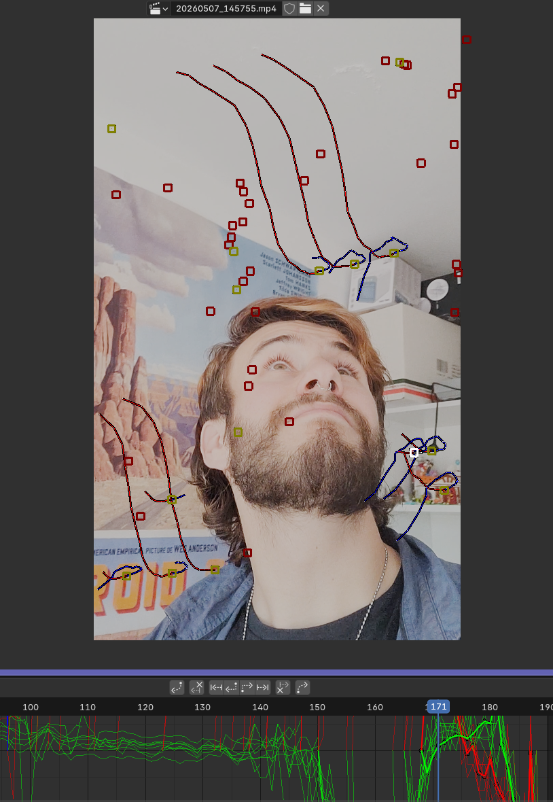
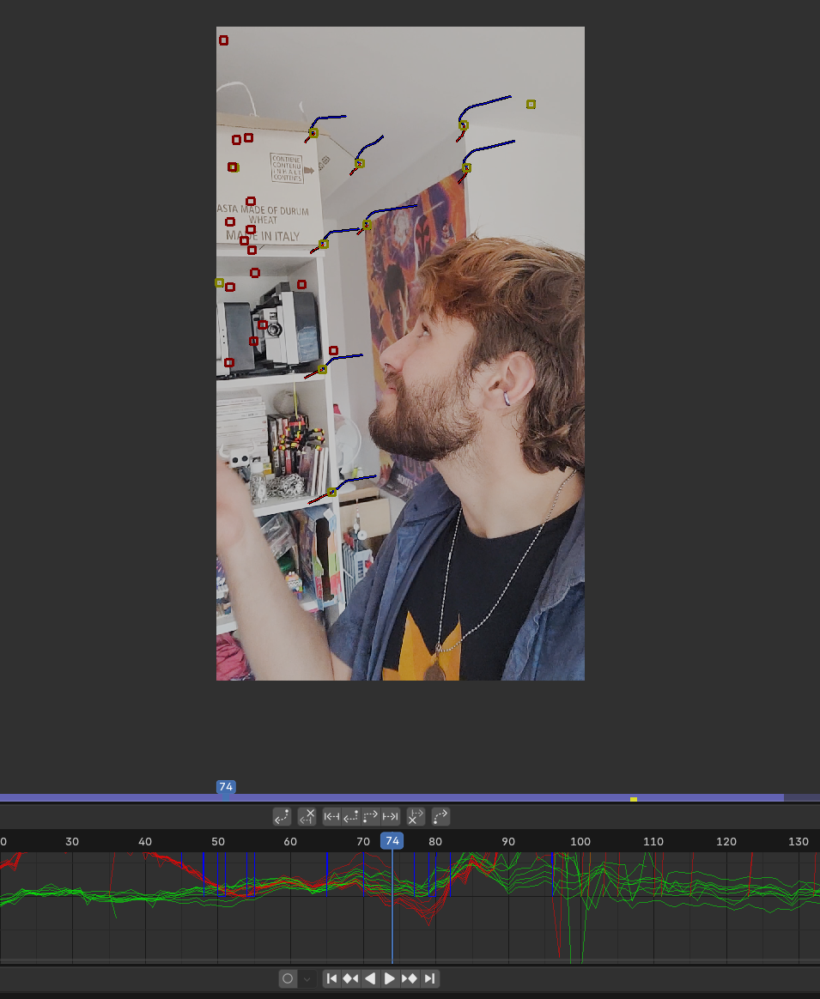
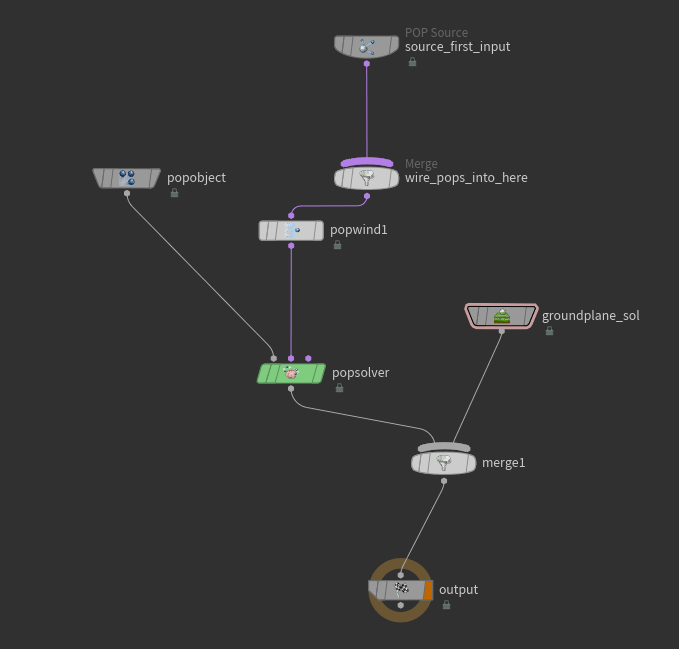
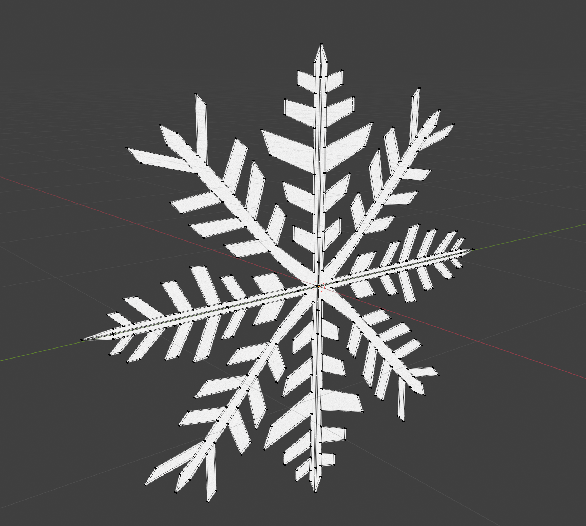

Basic VFX in Houdini
Adding falling snow to a video with Houdini (mostly) and Blender.
Camera Tracking (Blender)
First, to add 3D objects to a moving video, we have to identify the camera movement and position in order to make the the 3D models ruled by those physical constraints.
Here's the video we chose to work with:
There's a feature to track the camera movement in Blender so we scattered several points on the video to identify how it moves.


Which led to a moving digital camera in Blender quite accurate to reality.
Setting the Scene (Houdini)
So we can now import our camera movements as
There's a feature to track the camera movement in Blender so we scattered several points on the video to identify how it moves.
Adding primitives snowflakes (particles)
We generate a grid as the cieling of the room where the video takes place.
With the following Node graph we are able to add wind to simulate gravity with a more natural movement.

And there we are!
Adding a snowflake shape to those particles (Houdini + Blender)
We first of all create a 3D model of a snowflake in Blender.

And here's the 3D view:
We now have to import the snowflake model into Houdini and use it as the particles' shape.